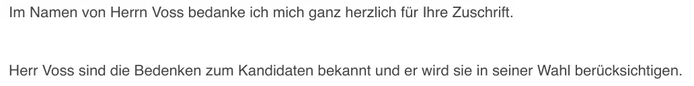

Beweisstück · E-Mail
Büro des Europaabgeordneten Axel Voss an Giltay, 11. Dezember 2024
Die Passage
“Im Namen von Herrn Voss bedanke ich mich ganz herzlich für Ihre Zuschrift. Herr Voss sind die Bedenken zum Kandidaten bekannt und er wird sie in seiner Wahl berücksichtigen.” Seite 1, der Text der Antwort, direkt unter der Anrede. Die beiden Sätze stehen in der E-Mail als getrennte Absätze mit einer Leerzeile dazwischen; oben sind sie zusammengeführt. Die Nachricht wurde von einem politischen Referenten und Pressesprecher im Büro von Herrn Voss in dessen Namen geschrieben und stammt von Voss’ parlamentarischer Adresse. Name und Kontaktdaten des Mitarbeiters sind in diesem PDF geschwärzt.

Warum dieses Dokument wichtig ist
Das Zitat von Axel Voss im Stimmenabschnitt stammt aus dieser E-Mail. Reinier van Zutphen, damals Nationaler Ombudsmann, war Kandidat bei der Wahl des Europäischen Bürgerbeauftragten am 17. Dezember 2024. Am 8. Dezember schrieb Giltay dem deutschen christdemokratischen Europaabgeordneten, warum er an der Bilanz des Kandidaten in Sachen Transparenz zweifelte: Giltay war in einem offiziellen Bericht des damaligen Nationalen Ombudsmanns, R. Fernhout, diskreditiert worden, nachdem er Zeuge einer militärischen Geheimdienstaffäre um die niederländische Rolle in Srebrenica geworden war, das Berufungsgericht Den Haag hatte seiner Auffassung nach die Richtigkeit seines Buches seither bestätigt, und Van Zutphen hatte diesen Bericht weder zurückgezogen noch korrigiert. Giltay bat darum, diese Bedenken vor der Abstimmung sorgfältig abzuwägen, und fügte das PDF der englischen Ausgabe seines Buches bei. Die Antwort kam drei Tage später aus Voss’ Büro, in seinem Namen, und ist zwei Zeilen lang: Die Bedenken sind ihm bekannt, und er wird sie bei seiner Wahl berücksichtigen.
Herkunft
- Dokument
- E-Mail, zwei Seiten, aus Gmail ausgedruckt
- Absender
- Büro von Axel Voss, Mitglied des Europäischen Parlaments (CDU, Fraktion der Europäischen Volkspartei), unterzeichnet von einem politischen Referenten und Pressesprecher, der in Voss’ Namen schreibt
- Empfänger
- Edwin Giltay
- Datum
- Mittwoch, 11. Dezember 2024, 13:21 Uhr
- Betreff
- „RE: Bedenken zum niederländischen Kandidaten für das Amt des Europäischen Bürgerbeauftragten“
- Antwort auf
- Edwin Giltays Nachricht vom Sonntag, 8. Dezember 2024, 16:58 Uhr, vollständig abgedruckt auf Seite 2
- Bezüge
- Reinier van Zutphen, Nationaler Ombudsmann und einer der Kandidaten für das Amt des Europäischen Bürgerbeauftragten; sein Auftritt in Brüssel in der Woche zuvor; das Urteil des Berufungsgerichts Den Haag; zwei Gerichtsverfahren, die Giltay kurz zuvor gewonnen hatte; die Abstimmung vom 17. Dezember; das PDF der englischen Ausgabe des Buches, mit einer deutschen Zusammenfassung auf Seite 269; und die Website dercoverupgeneral.de
- Sprache
- Deutsch, in einer niederländischsprachigen Gmail-Oberfläche
- Aufbewahrt bei
- Edwin Giltay, der Empfänger
- Siehe auch
- Bericht 1999/507 des Nationalen Ombudsmanns, 17. Dezember 1999Berufungsgericht Den Haag, Urteil vom 12. April 2016 (ECLI:NL:GHDHA:2016:870)
Zitiert in: dem Stimmenabschnitt.
Beweiskarte: https://
Dokument: https://
Zuletzt geändert am 26. Juli 2026, abgerufen am 3. Oktober 2026.

Diese Seite ist ein Beweisstück zum Buch Der Cover-up-General von Edwin Giltay und zur dazugehörigen Website.